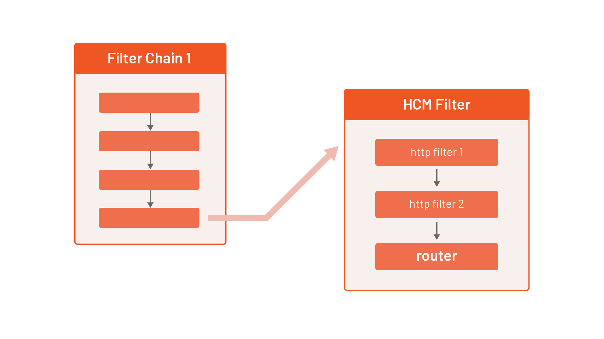

Introduction to Envoy¶
In this lab, we will learn how basic Envoy building blocks are composed into a fully functioning Envoy proxy configuration.
We begin with a minimal configuration needed to get Envoy up and to run and then build on it to get it to do more.
Prerequisites¶
We'll automatically download and run the Envoy proxy automatically, using the func-e CLI. To install func-e, run the following command:
You can verify func-e CLI gets installed by running the following command:
To run the Envoy proxy, we have to provide a configuration file. In the next section, we'll construct a minimal configuration file that allows us to run Envoy.
Listening for requests¶
The minimal configuration needed to launch Envoy includes a listener and filter chains. As the name suggests, the listener address and the port number are where Envoy will listen for incoming connections. In our example, we'll define a listener on address 0.0.0.0 and port 10000 and an array of empty filter chains (we'll get to them in a bit).
minimal-config.yaml
Save the above file to minimal-config.yaml, and let's run Envoy with this configuration:
[2022-04-14 21:10:56.396][1328][warning][main] [source/server/server.cc:585] No admin address given, so no admin HTTP server started.
[2022-04-14 21:10:56.396][1328][info][config] [source/server/configuration_impl.cc:127] loading tracing configuration
[2022-04-14 21:10:56.396][1328][info][config] [source/server/configuration_impl.cc:87] loading 0 static secret(s)
[2022-04-14 21:10:56.396][1328][info][config] [source/server/configuration_impl.cc:93] loading 0 cluster(s)
[2022-04-14 21:10:56.396][1328][info][config] [source/server/configuration_impl.cc:97] loading 1 listener(s)
[2022-04-14 21:10:56.397][1328][info][config] [source/server/configuration_impl.cc:109] loading stats configuration
[2022-04-14 21:10:56.397][1328][info][runtime] [source/common/runtime/runtime_impl.cc:449] RTDS has finished initialization
[2022-04-14 21:10:56.397][1328][info][upstream] [source/common/upstream/cluster_manager_impl.cc:206] cm init: all clusters initialized
[2022-04-14 21:10:56.397][1328][warning][main] [source/server/server.cc:715] there is no configured limitto the number of allowed active connections. Set a limit via the runtime key overload.global_downstream_max_connections
[2022-04-14 21:10:56.397][1328][info][main] [source/server/server.cc:817] all clusters initialized. initializing init manager
[2022-04-14 21:10:56.397][1328][info][config] [source/server/listener_manager_impl.cc:779] all dependencies initialized. starting workers
[2022-04-14 21:10:56.399][1328][info][main] [source/server/server.cc:836] starting main dispatch loop
Running Envoy in background.
Adding the character & at the end of the command will run Envoy in the background. To bring the Envoy process to the foreground, type fg in the terminal. To stop the process, use Ctrl+C
When Envoy starts, it will print log messages to the console. We can tell how many secrets, clusters, listeners, and other resources Envoy loaded from the log messages. Since we only have a single listener, we'll see that Envoy loaded 0 secrets, 0 clusters, 1 listener.
Envoy Admin Interface.
You might have noticed the log message, No admin address given, so no admin HTTP server started. Envoy can be configured to run with an admin interface enabled. This web interface allows you to view Envoy's configuration and runtime information. We'll enable it later on.
We can try and send a request to localhost:10000, however since we're only listening to an address, but we haven't told Envoy where to route the requests to, there's not much we can expect from the response:
* Trying 127.0.0.1:10000...
* Connected to localhost (127.0.0.1) port 10000 (#0)
> GET / HTTP/1.1
> Host: localhost:10000
> User-Agent: curl/7.74.0
> Accept: */*
>
* Empty reply from server
* Connection #0 to host localhost left intact
curl: (52) Empty reply from server
We get back Empty reply from server.
Sending direct responses¶
We'll have to define a filter chain to route the requests. Filter chains are a collection of filters that can be applied to a request. A filter can inspect the request at different levels and perform some action based on the results. There a various types of filters, such as listener filters, network filters, and HTTP filters, and they operate at different levels of the request.
For example, the listener filters will operate on the received packet's headers. In contrast, the HTTP connection manager network filter can translate from raw bytes to HTTP-level messages. It can handle access logging, generate request IDs, manipulate headers, etc.
We'll define the HTTP connection manager filter (or HCM for short) in the filter chain. Inside the HCM filter configuration, we can define one or more HTTP filters. The last filter in the HTTP filter chain has to be the router filter (envoy.filters.http.router) that implements the HTTP forwarding to a cluster.
So we'll have a single network filter (HCM) with a single HTTP filter (router), as shown below:

Review the following Envoy configuration, which adds an HCM filter specification to the chain (the symbols reveal explanations of the corresponding section of the configuration):
static_resources:
listeners: # (1)
- name: listener_0
address:
socket_address:
address: 0.0.0.0
port_value: 10000
filter_chains:
- filters:
- name: envoy.filters.network.http_connection_manager # (2)
typed_config:
"@type": type.googleapis.com/envoy.extensions.filters.network.http_connection_manager.v3.HttpConnectionManager
stat_prefix: hello_world_service # (3)
http_filters:
- name: envoy.filters.http.router # (4)
route_config: # (5)
name: my_first_route
virtual_hosts:
- name: my_vhost
domains: ["*"]
routes:
- match:
prefix: "/"
direct_response:
status: 200
body:
inline_string: "Hello!"
- The listener section is the same as before; nothing has changed here.
- A network filter has a name,
typed_configsection that contains the configuration for the filter. The@typefield is required and specifies the type of the filter. - The
stat_prefixis a required field that specifies the prefix for the stats generated for the filter. - The only HTTP filter we've specified is the router filter.
- Route config contains the routing table for the connection manager.
Other configuration settings
The HCM contains numerous other fields we can specify and configure. You can check out the complete documentation of the HCM here.
The most interesting part of the HCM is the route_config section. This section contains the route table for the connection manager, and it specifies the virtual hosts and routes that Envoy will use to route the requests.
The domains field inside a virtual host specifies the domain names the virtual host will serve. This is where we could define an actual domain name we want to match against. For example, if we include hello.com in the domains array, Envoy will check if the host/authority header of the incoming request matches one of the specified domains and then proceed to the routes section. We're specifying * in the domains, which means we'll match on any host/authority header.
Next, we can define one or more routes (note that the first route that matches will be used) by comparing the request properties such as the path, query parameters, headers, etc.
Once the route is matched, we can specify the cluster Envoy forwards the request to. Later we'll use an actual cluster, but for this example, we're using a route called DirectResponseAction (direct_response field) that returns a status and body we specify.
Save the above configuration to direct-response.yaml and start Envoy:
After Envoy starts, we can send a request to localhost:10000 and we'll get back the response as specified in the direct_response field:
* Trying 127.0.0.1:10000...
* Connected to localhost (127.0.0.1) port 10000 (#0)
> GET / HTTP/1.1
> Host: localhost:10000
> User-Agent: curl/7.74.0
> Accept: */*
>
* Mark bundle as not supporting multiuse
< HTTP/1.1 200 OK
< content-length: 6
< content-type: text/plain
< date: Thu, 14 Apr 2022 22:06:58 GMT
< server: envoy
<
* Connection #0 to host localhost left intact
Hello!
Run fg to bring the Envoy process to the foreground, followed by Ctrl+C to interrupt and terminate the process.
Defining endpoints¶
Using a direct response when sending a request is an easy way to get started. However, it's not realistic. Typically, we want to route the request to endpoints. In Envoy, similar endpoints (e.g., multiple instances of the same service) are part of a logical group called clusters. Grouping the endpoints in such a way allows us to define the load balancing policies for the group and the locality of endpoints.
Here's an example of a cluster called hello_world_cluster with two endpoints - both running on 127.0.0.1, one listening on port 8100 and the other one listening on port 8200:
clusters:
- name: hello_world_cluster
load_assignment:
cluster_name: hello_world_cluster
endpoints:
- lb_endpoints:
- endpoint:
address:
socket_address:
address: 127.0.0.1
port_value: 8100
- endpoint:
address:
socket_address:
address: 127.0.0.1
port_value: 8200
The clusters in the Envoy configuration are declared in the clusters section, just like we declared the listeners in a separate field. The cluster section is also where we can configure health checks, circuit breakers, outlier detection, and other configuration settings.
With the endpoints defined in clusters, we can combine the previous configuration and come up with something like this:
clusters.yaml
Save the above YAML to a file name clusters.yaml and run Envoy:
If we send a request to localhost:10000 we'll get back an error:
[2022-04-15 18:19:18.006][1067][warning][client] [source/common/http/codec_client.cc:122] [C1] Connection is closed by peer during connecting.
upstream connect error or disconnect/reset before headers. reset reason: connection failure, transport failure reason: delayed connect error: 111
We get an error because nothing is listening on ports 8100 and 8200, the two endpoints we referenced in the cluster. Let's just run two instances of the httpbin service:
CONTAINER ID IMAGE COMMAND CREATED STATUS PORTS NAMES
4b2beee7fec2 kennethreitz/httpbin "gunicorn -b 0.0.0.0…" 3 seconds ago Up 2 seconds 0.0.0.0:8100->80/tcp condescending_meninsky
9af09f693a84 kennethreitz/httpbin "gunicorn -b 0.0.0.0…" 5 seconds ago Up 2 seconds 0.0.0.0:8200->80/tcp reverent_kowalevski
Now that we have two instances of the httpbin service running, we can send a request to localhost:10000 and we'll get back the response:
{
"headers": {
"Accept": "*/*",
"Host": "localhost:10000",
"User-Agent": "curl/7.74.0",
"X-Envoy-Expected-Rq-Timeout-Ms": "15000"
}
}
To see that Envoy is load-balancing between the two endpoints, we can stop one of the containers (e.g. docker stop <container_id>) and then send a couple of requests. You'll notice we'll either get back a connection error or a response from one of the running services.
Routing requests¶
In the previous example, we've sent requests to multiple instances of the same service (a single cluster with two endpoints). In the following example, we'll see how to route requests to an instance of a different service.
To represent different services, we can use another cluster. It's as simple as creating a separate cluster, for example:
clusters:
- name: hello_world_cluster
load_assignment:
cluster_name: hello_world_cluster
endpoints:
- lb_endpoints:
- endpoint:
address:
socket_address:
address: 127.0.0.1
port_value: 8100
- name: second_cluster
load_assignment:
cluster_name: second_cluster
endpoints:
- lb_endpoints:
- endpoint:
address:
socket_address:
address: 127.0.0.1
port_value: 8200
Once we have more than one cluster, we have to decide how we want to split the traffic between them. There are multiple ways we can configure traffic routing. Here are a couple of examples:
- Create multiple virtual hosts and split the traffic based on the host/authority (e.g.,
www.example.comtraffic goes to one cluster andwww.hello.comtraffic goes to another cluster). - Within a single virtual host, we can inspect the request properties and match (and route) traffic. For example, we can match the header values or match the request's path (e.g.,
/v1/apigoes to one cluster and/v2/apigoes to another cluster). - Split the traffic by weight, where a certain percentage of traffic goes to one cluster and the rest to another cluster.
Let's look at a simple example of splitting the traffic based on the path prefix. We'll use the same backend service (httpbin), but we'll route the traffic that starts with /one to the first cluster and the one that starts with /two to the second cluster. We'll rewrite the URL to /ip and /user-agent to see the difference between the two responses.
Here's the snippet of the routing configuration:
route_config:
name: my_first_route
virtual_hosts:
- name: my_vhost
domains: ["*"]
routes:
- match: # (1)
path: "/one"
route:
prefix_rewrite: "/ip" # (2)
cluster: hello_world_cluster
- match:
path: "/two"
route:
prefix_rewrite: "/user-agent"
cluster: second_cluster
- We're matching the path to
/onein the first route. - If the path matches
/one, we'll rewrite the path to/ipand send the request to the first cluster (hello_world_cluster).
Why are we using prefix_rewrite?
We're rewriting the URL because the backend service (httpbin) doesn't implement the /one or /two paths. Therefore, we're matching that path at the proxy level, then based on the match, we're saying to rewrite the original path, for example, /one to /ip.
We can put everything together now for the final example:
routing.yaml
Save the above YAML to routing.yaml and run Envoy:
Let's try sending the request to localhost:10000/one - we'll get back the following response:
Similarly, if we send a request to localhost:10000/two we'll get back the user agent information:
Type fg to bring the Envoy process to the foreground and press Ctrl+C to stop it.
Cleanup¶
To stop running the Docker containers, run:
Summary¶
Equipped with the basics of Envoy, in the next lab, we turn our attention to Istio, of which Envoy is a crucial building block.